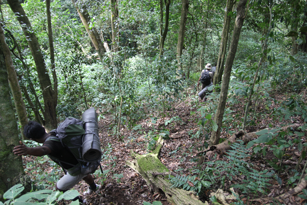
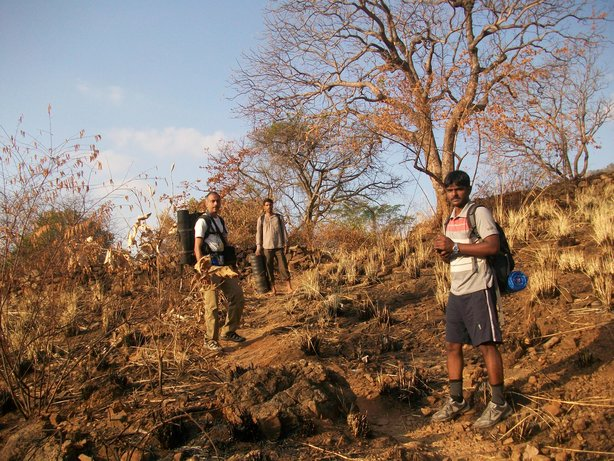
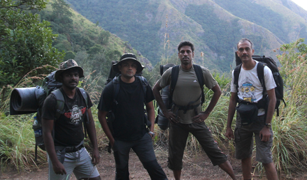
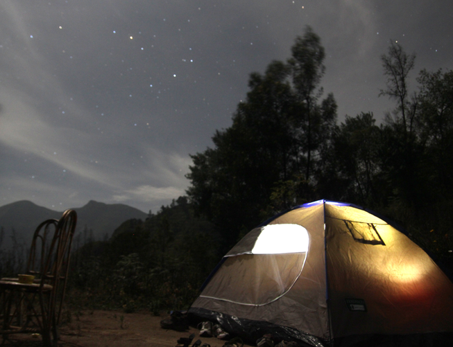

Kurangani to Top Station
The promised easy route down from Top Station was slowly turning nightmarish. For more than two hours we were following our guides through dense forest, with no trail, pushing away thorns, trying unsuccessfully to avoid the stinging nettles, repeatedly getting feet entangled in vine that proved much stronger than it looked, as we slid down the slopes and somehow managed to negotiate our way across a steep slope with sparse footholds, a slip from which would have plunged us onto the rocky walls of a stream far below. We were catching our breath in a clearing when the guide casually mentioned that the dead rotting leaves all around us could harbour king cobras. Some how, at that moment, with everything else, it did not seem to matter.
Our trek started on a friday night, travelling by car from Chennai, to the village of Kurangani via Trichy, Dindigul, Theni and Bodi. This village formed the “bottom station” for a ropeway that extended to “central station” and further on to “top station”, that was used to bring down the tea from Munnar to the plains by the British. The villagers told us it would take about 3 hours to Central Station and another 2-3 hours to Top Station. It was almost 10 in the morning, but we assured them we were seasoned trekkers and it would be easy for us to reach the top by evening. We set off, and within half an hour, the slope and the heat left us panting.
When we reached a waterfall on the way, we took a break without any hesitation to enjoy a dip in the cool waters. We ended up spending an hour here before we took off again to battle the climb and the terrible heat. There was poor cover over the trail leaving us fully exposed to the fierce heat of the sun. About 3 hours later, we reached Central Station for a late lunch. Stuffed with the tasty meal cooked by a local villager and with a couple of glasses of lemonade each from the village store, we decided to rest and move to Top Station the next day. We enjoyed a relaxed evening, with a small walk at sunset and an early bedtime.
Sunday morning found us back on the trail by 6.30 am and we were able to beat the heat to reach the top by 9.30 am. Apart from a few buildings in ruins and a large platform at top station, there was very little evidence of the existence of the ropeway along the whole route. At top station, we decided to take a guided walk in Pambadum sanctuary. The forest department officials seemed grumpy that we had disturbed their session of morning paper reading and small talk, but finally we set off with a guide on a picturesque walk. Here we also saw the remnants of the ‘escape route’ the disused road to kodaikanal. We had lunch and then a local offered to assist us in finding a good campsite. This place was out of the main Top Station area, took a full hour’s walk to get to, and was on the hillside, opposite the view point on Top Station and overlooking the plains.
We set up the tent and spent a pleasant hour sitting on chairs in the fading daylight, talking. By now, we had three people “helping” us, one the caretaker of the place and the others the locals who had brought us here. They promised to give us soup in the evening, and dinner with chapathis and eggs. Not having change, I gave them a 500 rupee note to cover the expected expenses of about Rs.200. To our surprise all three disappeared to buy the groceries and while the hours passed and darkness fell, there was no sign of the three. When they returned after a couple of hours, it was with the smell of alcohol on their breath and a bill for about 5 times the initially expected amount. Alone at night on a lonely hillside, there wasn’t much we could do about this and a lot of pestering for a bill resulted in one being produced next morning where the numbers were clearly altered to inflate the total. There was nothing to do, but take it as part of the adventure. To their credit they could be persuaded to accompany us on the way down on the previously described hair-raising non-trail. This finally led to a lovely waterfall in dense forest where we had a refreshing bath. After some unpleasant moments of haggling over their payment, we finally set off on a winding climb down in a lovely landscape.

A steep climb down brought us to a small settlement, from where we walked in the hot midday sun to finally reach Kurangani again. Back on the road, and we were home by midnight.
Comments
Comments powered by Disqus